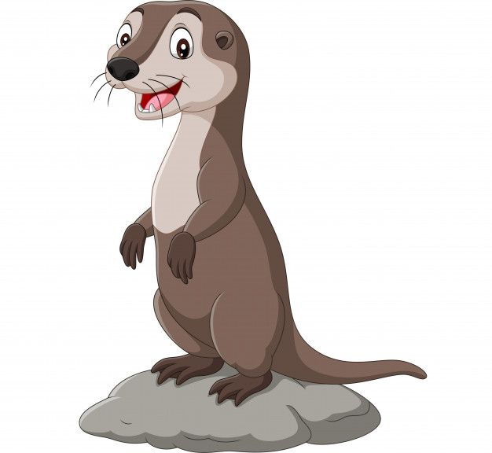

AVES
Prepárate para una experiencia única donde nuestras estrellas emplumadas mostrarán sus mejores habilidades
(y alguna que otra travesura).
Primero, el águila real hará un majestuoso vuelo en picado, siempre y cuando no se distraiga con un ratón imaginario. Luego, las cacatúas ofrecerán un concierto de gritos
que haría palidecer al mismísimo Pavarotti (traigan tapones para los oídos).
Atención al número "la maniobra del buitre distraído", donde intentará robarse tu bocadillo. Y no te pierdas a los búhos sabios, que te
mirarán fijamente como si supieran todos tus secretos, mientras piensan en su próxima siesta.
MAMIFEROS
Aquí disfrutarás de peludos protagonistas que demostrarán que ser adorable es un arte! Prepárate para ver a las nutrias hacer más acrobacias que tú intentando salir de la cama un lunes, a los lobos demostrando que "aúlla y vencerás" y a un jabalí que sigue creyendo que es la estrella principal del show. No te pierdas el baile sincronizado de los topillos, que es más descoordinado que un grupo de turistas perdidos, pero mucho más adorable.
